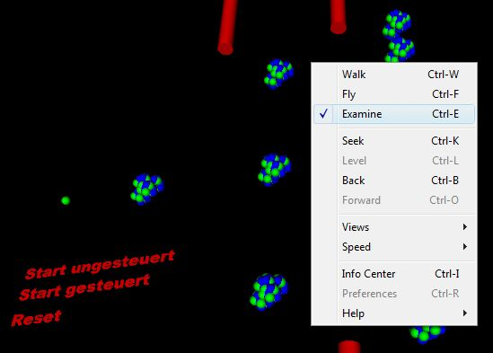
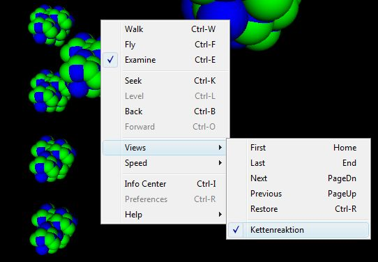

| Infos und Hilfe zum PlugIn | |
|
Das Thema Atomphysik soll mittels 3D-Animationen anschaulich angeboten werden und mit Hilfe vieler interaktiven Übungen zum selbständigen Üben einladen. Diese dreidimensionalen Grafiken und Animationen wurden mit den | |
|
Die dreidimensionalen Darstellungen dieser HomePage wurden durch die objektorientierte Programmiersprache VRML (Virtual Reality Modeling Language) verwirklicht, die speziell für den Einsatz im Internet entwickelt worden ist! Das PlugIn Contact von Blaxxun kostenlos downloaden: | |
|
Nach dem Herunterladen und Installieren des PlugIn Contact von Blaxxun können vom Browser nun auch *.wrl-Dateien angeszeigt werden. Diese World-Dateien enthalten die VRML-Inhalte. Mit einem Rechtsklick in der jeweiligen Dateiansicht öffnet sich ein Kontexmenü, über das man verschiedene Funktionen aufrufen kann: | |
|  | |
|  | |
|
E-Mail an Autor: | |